Sky, weather, water & effects
Turn a plain island into a mood: set the time of day, call in rain or snow, tune the lagoon, and sprinkle on fireflies, birds, smoke, lanterns, sun shafts — even a grass fire.
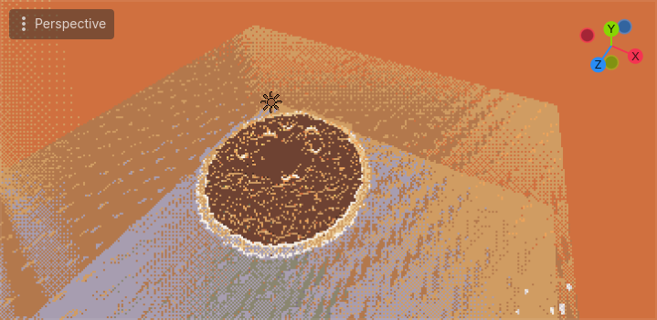
What you'll learn
- How the eleven atmosphere nodes work together, and the two ways to add one.
- Why the Animate switch matters (it's for watching motion, not for seeing your edits).
- Scrub the time of day, flip through all six weather types, and compare the six Lighting Presets.
- Every setting of every effect: Sky & Clouds, Day / Night, Weather, Water, Fireflies, Particle Field, Birds, Smoke & Fire, Light Volumes, Sun Shafts, Grass Fire.
- Three recipes — stormy night, misty dawn, sunny lagoon — and how all of this maps to Roblox's Lighting, Atmosphere, Clouds, Terrain water and ParticleEmitter.
The renderer-level look — pixel size, outlines, palette, God Rays, debug views, the Animate and Pixel Preview switches and the Pixel World panel itself — lives on page 7, The pixelizer. This page covers the effect nodes that sit on top of it.
Words you'll meet
- Node
- One building block in a Godot scene — like an Instance (a Part, a Script, a Light) in Roblox's Explorer. Every effect on this page is one node.
- Scene /
.tscn - A saved file of nodes, like a Roblox place or model. This page uses
res://tutorial/04_world_mood.tscn(res://just means "the project folder"). - Scene dock
- The tree of nodes at top-left — Godot's Explorer.
- Inspector
- The panel on the right listing the selected node's properties — Godot's Properties window.
- Viewport
- The big 3D view in the middle, where you see the world.
- Strip
- The addon's bottom attribute strip: a friendlier, tabbed copy of the selected effect's settings, under the viewport.
- Pixel World panel
- The addon's panel on the right of the viewport, listing every effect with a Select or + Add button, plus the Lighting Presets.
New to Godot? Page 1 tours the editor, and the glossary on page 14 translates every Godot word into its Roblox Studio equivalent.
The big picture: the atmosphere family
Open tutorial/04_world_mood.tscn (double-click it in the FileSystem dock, bottom-left). It's a little green island with a hut in a wide turquoise lagoon, and it already has most of the atmosphere family wired up. Here's what each node in the Scene dock does:
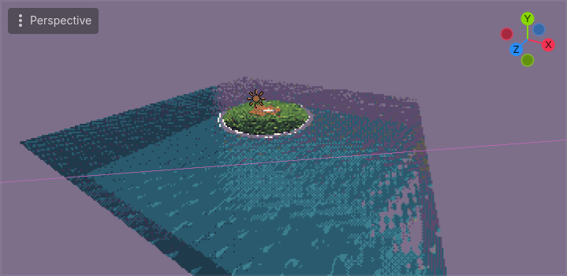
| Node (Scene dock) | Type | What it does |
|---|---|---|
| WorldEnvironment | WorldEnvironment | Holds the Godot Environment (sky colour, ambient light, fog) that Day / Night grades. |
| Sun | DirectionalLight3D | The sun light that the sky, day/night and god rays follow. |
| MarchingSquaresTerrain | MarchingSquaresTerrain | The island and lagoon floor (with grass). |
| PixelWater | PixelWater | The lagoon water: depth bands, foam, waves. |
| Camera | MstOrbitCamera | The game camera (orbits when you press Play). |
| PixelRenderer | PixelRenderer | The pixel look — page 7. |
| PixelSky | PixelSky | Cloud shadows and the overhead cloud deck; shares sun/cloud info with everything else. |
| PixelDayNight | PixelDayNight | Time of day, sun arc, sky/ambient colour, fog, rim light. |
| PixelWeather | PixelWeather | Clear / Cloudy / Foggy / Rain / Snow / Storm, plus optional extra snow. |
| Fireflies | PixelFireflies | A glowing night swarm. |
| Birds | PixelBirds | A flock of flapping pixel birds. |
| Dust | PixelParticleField | Dust motes drifting in the light. |
| (you add) Smoke | PixelSmoke | Smoke plume, optionally with flames. |
| (you add) LightVolume | PixelLightVolume | A lantern-style light with a dithered pool. |
| (you add) SunShafts | PixelSunShafts | Visible shafts of sunlight. |
| (you add) FireSystem | PixelFireSystem | Spreading grass fire (goes under the terrain). |
Tour the workspace
Click PixelDayNight in the Scene dock. Three things appear around the viewport: the addon's left pixel toolbar, the Day / Night strip at the bottom, and the Pixel World panel on the right. Click the numbered markers:
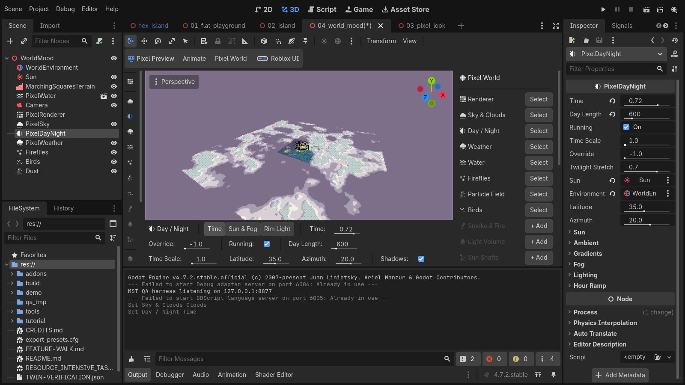
Animate: for watching, not for seeing
The Animate toggle in the menu bar over the viewport (page 7) runs the shared effects clock in the editor. A fresh editor session starts with it off, so the clock is frozen.
- Animate off: nothing moves by itself — clouds don't drift, the Day/Night sun stays put even with Running ticked, rain doesn't fall, birds hang in the air. But any edit you make shows up at once: drag Time and the whole scene recolours; pick a weather and it snaps fully into place.
- Animate on: the clock runs — clouds drift, the day cycles, rain and snow fall, lightning flashes, birds fly, fire flickers and spreads.
- Press Play (runtime) and everything always animates.
Leave Animate off while you're tuning (the editor is calmer), and switch it on when you want to watch the motion. If the sun "won't move", that's just Running + Animate off — nudge Time or turn Animate on.
Two ways to add an effect
1. Pixel World panel → + Add (easiest). Click + Add on a row. The node is inserted with its sun, environment and camera references filled in for you, as one undo step, and the row's button flips to Select. Drag the slider to compare:
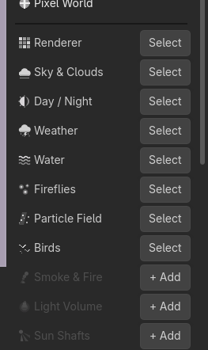
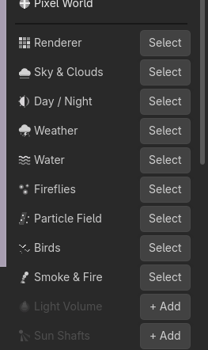
Effects that belong to the terrain — Grass Fire (and Erosion and Wild Flowers, covered elsewhere) — are added under the terrain. With one terrain it just works; with several, select the terrain first.
2. Scene dock → Add Child Node (the manual Godot way). Click the + at the top of the Scene dock, search the type name (e.g. PixelSmoke) and press Create. You then wire the references yourself — or click Wire Sun / Env Refs in the Pixel World panel, which fills any empty sun/environment slots on Sky, Day/Night, Weather and Sun Shafts.
New effect nodes appear at the editor camera's focus point — often in mid-air. Move them onto whatever should smoke or glow: Inspector → Transform → Position.
The lower rows (Pixel Object, Diagnostics, Erosion, Wild Flowers, Grass Fire) and the Lighting Preset buttons are below the fold. Mouse-wheel over the panel to reach them — a button that's scrolled out of view won't respond to clicks.
Editing fields
Selecting an effect (in the Scene dock, the pixel toolbar, or with Select in the panel) swaps the bottom strip to that effect's section. Fields work exactly as on page 7: drag a number sideways (one drag = one undo step) or click it to type, tick checkboxes, open dropdowns, click colour buttons. Hover a field for its tooltip — label, property name and range. Every change appears in the History tab (next to FileSystem, bottom-left) as Set <Section> <Field>, and Ctrl+Z undoes it.
The editor can be slow on modest machines. Wait a second after clicks that rebuild the strip, and drag spin-sliders slowly — or click and type the exact value.
Guided tutorial: give the island a mood
- Open
tutorial/04_world_mood.tscn. Make sure Pixel Preview is on (menu bar over the viewport). - Click PixelDayNight in the Scene dock. On the strip's Time tab, click the Time number and type
0.25— dawn. Try0.5(noon) and0.75(dusk). - Click PixelWeather. On the Weather tab, open the Weather dropdown and choose Rain. The lagoon darkens instantly.
- Turn Animate on. Watch the rain fall and splash. Then set Weather back to Clear.
- Click PixelWater and look through its seven tabs. With Animate on, watch the foam surge around the shore.
- Set Day / Night Time to
0.9and click Fireflies — the glowing swarm fades in. - In the Pixel World panel, click + Add on Smoke & Fire. Move the new Smoke node onto the island (Inspector → Position), then tick Fire on its Colors tab.
- Scroll the Pixel World panel down to Lighting Preset and click Dusk. The whole scene turns gold-orange. Press Ctrl+Z — it all comes back in one step.
- Save with Ctrl+S if you want to keep your changes (or don't — it's a tutorial scene).
Time of day
The single most powerful knob on this page is Day / Night → Time. It runs from 0 to 1: 0 is midnight, 0.25 roughly dawn, 0.5 noon, 0.75 roughly dusk. One change recolours the sky, the ambient light, the shadows and the sun's angle. Scrub it:
With Running on and Animate on, the clock advances by itself (one full day every Day Length seconds, times Time Scale), and cloud shadows drift across the ground:
Weather gallery
Select PixelWeather and pick one of six types from the Weather dropdown. Each one changes clouds, light, fog, ground wetness and adds falling rain/snow or lightning as needed — and it applies instantly, even with Animate off. Click a tab:
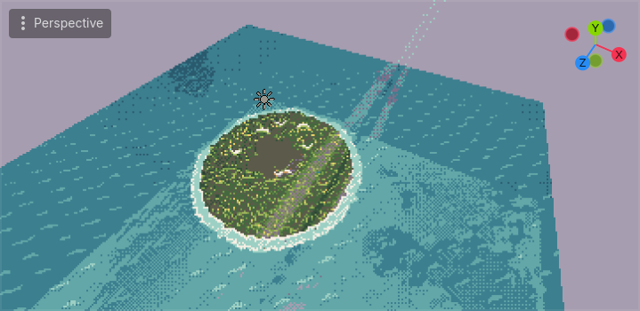
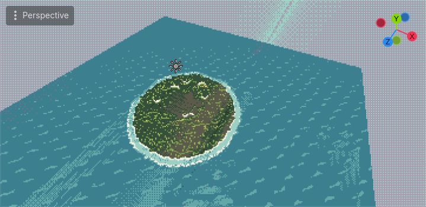
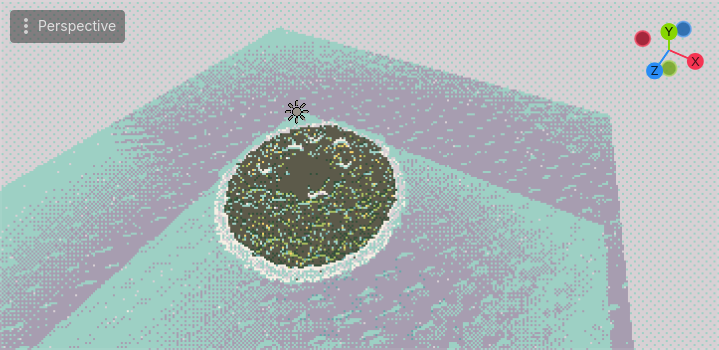
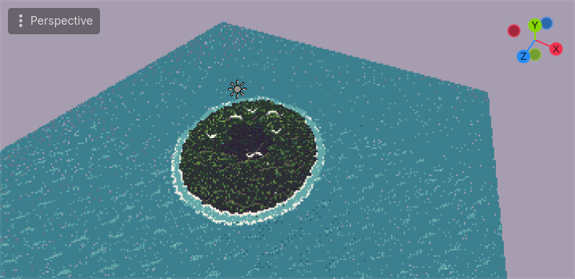
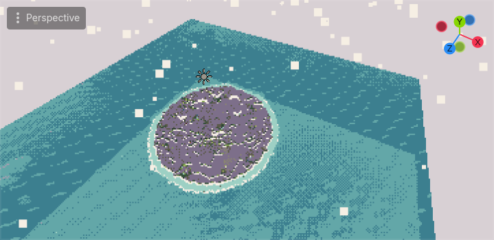
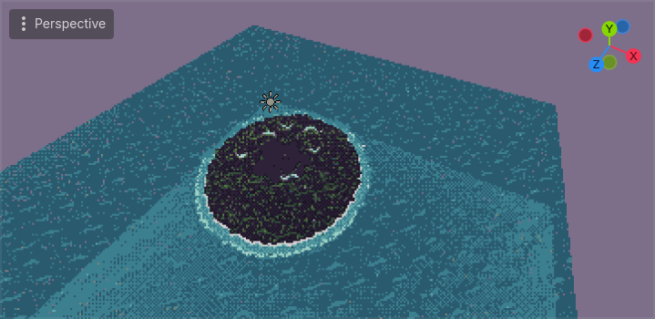
Drag to compare the two extremes:
In the editor with Animate off, a new weather snaps in at once. With Animate on (and in the running game) it blends over Transition seconds: 0 switches instantly, a few seconds gives a smooth in-game change.
Lighting Presets: six moods in one click
Scroll the Pixel World panel down past the effect rows to the Lighting Preset header. Its six buttons — Dawn · Noon · Dusk · Night · Storm · Snow — each set a whole bundle of values on Day / Night, Sky, Weather and the renderer's God Rays at once, as one undo step.
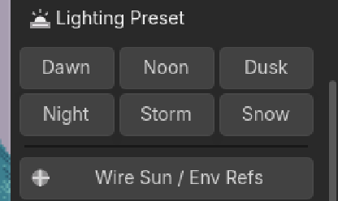
Click a mood to see it and the exact values it sets:
All six side by side (click one to enlarge):
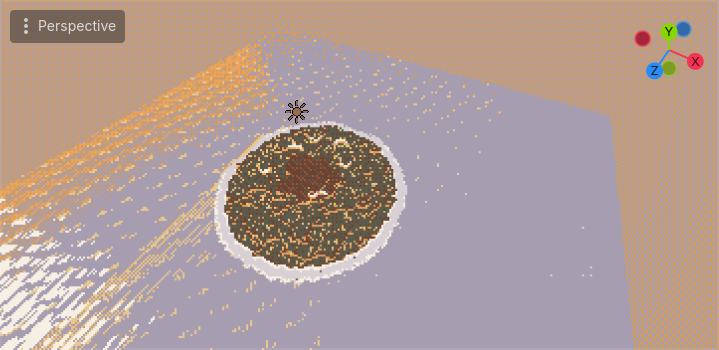

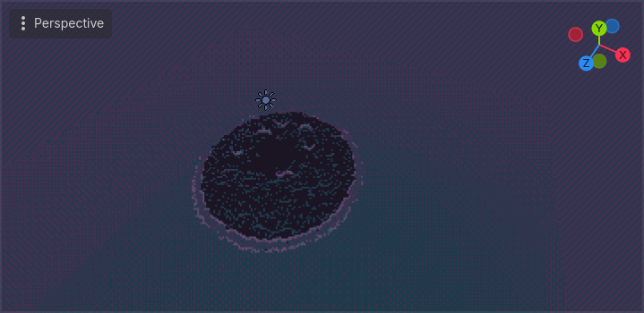
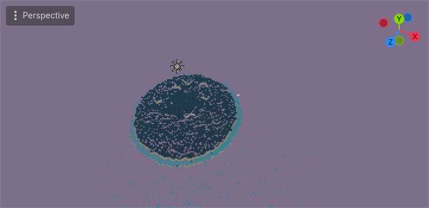
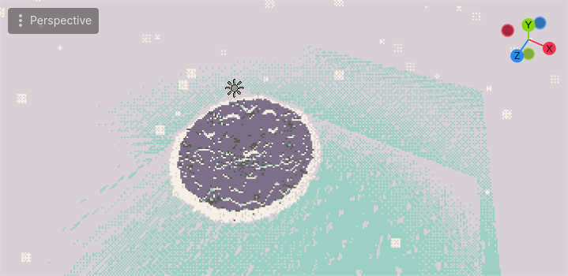
| Preset | Time | Weather | Clouds | God rays | Mood |
|---|---|---|---|---|---|
| Dawn | 0.27 | Clear | 0.35, peach deck | on, warm, alpha 0.5 | soft pink-gold morning, light fog |
| Noon | 0.50 | Clear | 0.42, no deck | on, bright, alpha 1.0 | bright midday |
| Dusk | 0.73 | Clear | 0.45, orange deck | on, orange, alpha 0.5 | warm golden-orange evening |
| Night | 0.95 | Clear | 0.30, blue deck | off | cool blue night |
| Storm | 0.45 | Storm | 0.85, grey deck, fog | off | dark overcast downpour |
| Snow | 0.42 | Snow | 0.62, white deck, fog | off | pale cold whiteout |
Fog: every preset except Noon also switches Day / Night Fog on (Storm thickest, then Snow); Noon switches it off.
Presets undo in one step
A preset changes many fields, but it's a single history step. Step through it:
You can click through all six presets in any order: each one sets fog on or off itself, so every mood looks the same however you got there, and Ctrl+Z reverts cleanly. (If an older copy of the addon leaves a washed-out mint-green haze after Storm or Snow, update the addon.)
Presets are starting points. Apply one, then fine-tune the individual nodes below — that's how the recipes work.
Every effect, every setting
Each effect below has: what it is, how to add it, its strip (tabs of screenshots), every setting as a card, and a clip. Use a node's own filter box, or search all settings at once here:
Sky & Clouds — PixelSky
Cloud shadows sliding over the ground, and an optional cloud deck — a visible sheet of cloud overhead. Its clouds also feed a shared cloud field that the terrain, grass, water and god rays all read, so turning Coverage up darkens the whole world consistently. Add it: Pixel World → Sky & Clouds → + Add (already present in the tutorial). Headline knob: Coverage.
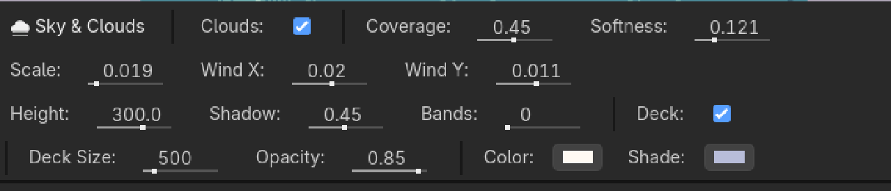
Clouds
Master switch for cloud shadows and the shared cloud field that terrain, grass, water and god rays read.
- Range / default
- on / off · default on
- Property
clouds_enabled
Coverage
How much of the sky is cloudy. More coverage = more and bigger shadow blobs on the ground. The headline knob.
- Range / default
- 0 – 1 · default 0.45
- Property
coverage
Softness
Soft versus hard edges on the cloud shadows.
- Range / default
- 0 – 0.5 · default 0.12
- Property
softness
Scale
Size of the cloud pattern: small values give tiny puffs, large values give big banks.
- Range / default
- 0.0015 – 0.2 · default 0.02
- Property
cloud_scale
Wind X
Cloud drift speed and direction, east–west. Only visible as motion with Animate on.
- Range / default
- −1 – 1 · default 0.02
- Property
wind (x)
Wind Y
Cloud drift, north–south.
- Range / default
- −1 – 1 · default 0.011
- Property
wind (y)
Height
Height of the cloud deck plane.
- Range / default
- 1 – 500 · default 300
- Property
cloud_height
Shadow
How dark the cloud shadows fall on the ground.
- Range / default
- 0 – 1 · default 0.45
- Property
shadow_strength
Bands
Posterises the cloud shading into N flat bands. 0 = smooth.
- Range / default
- 0 – 8 · default 0
- Property
bands
Deck
Draws the overhead cloud deck — the visible sheet of cloud in the sky.
- Range / default
- on / off · default on
- Property
deck_enabled
Deck Size
Size of the deck plane, which follows the camera.
- Range / default
- 10 – 4000 · default 500
- Property
deck_size
Opacity
How opaque the deck clouds are.
- Range / default
- 0 – 1 · default 0.85
- Property
deck_opacity
Color
The lit cloud colour.
- Range / default
- colour · white-ish
- Property
deck_color
Shade
The shaded cloud colour.
- Range / default
- colour · lavender-grey
- Property
deck_shade_color
With several skies in one scene, the Inspector property cloud_camera_scope picks which sky each camera uses.
Day / Night — PixelDayNight
The sun's arc across the sky, the sky and ambient colour grading over the day, fog, the cel-shading light ramp and a rim light. Add it: Pixel World → Day / Night. Headline knob: Time (see the scrubber).
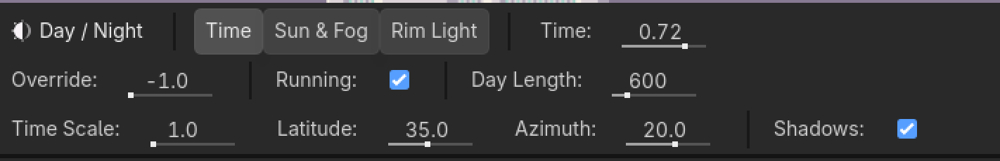
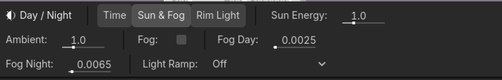
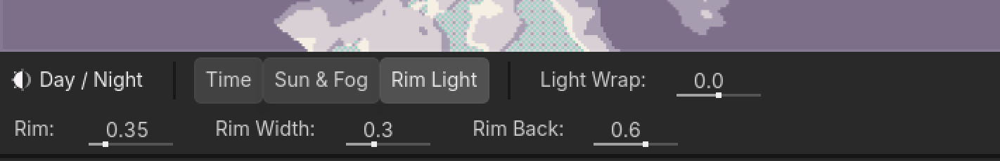
Time
The clock. 0 = midnight, 0.25 ≈ dawn, 0.5 = noon, 0.75 ≈ dusk. The whole scene recolours. The headline knob.
- Range / default
- 0 – 1 · default 0.72
- Property
time_of_day
Override
Pins the time to a value. −1 means off — let the clock run.
- Range / default
- −1 – 1 · default −1
- Property
time_override
Running
Advances the clock by itself when Animate is on (editor) or at runtime. With Animate off, the sun holds still.
- Range / default
- on / off · default on
- Property
running
Day Length
How many real seconds one full day takes.
- Range / default
- 1 – 3600 · default 600
- Property
day_length_seconds
Time Scale
Multiplies the clock speed.
- Range / default
- 0 – 100 · default 1
- Property
time_scale
Latitude
How high the sun climbs in the sky.
- Range / default
- 0 – 80 · default 35
- Property
latitude_tilt_deg
Azimuth
The compass direction of the sun's arc.
- Range / default
- −180 – 180 · default 20
- Property
azimuth_deg
Shadows
Whether the sun casts shadows.
- Range / default
- on / off
- Property
sun_shadows
Twilight Stretch
Stretches the dawn and dusk part of the sun's arc, so the low golden light lasts longer.
- Range / default
- default 0.7
- Property
twilight_stretch
Sun Energy
Scales the sun's brightness.
- Range / default
- 0 – 4 · default 1
- Property
sun_energy_scale
Ambient
Scales the ambient (fill) light.
- Range / default
- 0 – 4 · default 1
- Property
ambient_energy_scale
Fog
Lets Day/Night drive the environment fog.
- Range / default
- on / off
- Property
apply_fog
Fog Day
Fog thickness by day.
- Range / default
- 0 – 0.1 · default 0.0025
- Property
fog_density
Fog Night
Fog thickness at night.
- Range / default
- 0 – 0.1 · default 0.0065
- Property
fog_night_density
Light Ramp
The cel-shading light ramp: how light steps from lit to shadow.
- Range / default
- Off / Classic / Soft / Hard / Warm Shadows / Custom
- Property
light_ramp_preset
Light Wrap
Cel light-wrap: how far light wraps around a shape into its shadow side.
- Range / default
- −0.9 – 1
- Property
light_wrap
Rim
Strength of the rim glow on edges.
- Range / default
- 0 – 2
- Property
rim_strength
Rim Width
How wide the rim band is.
- Range / default
- 0 – 1
- Property
rim_width
Rim Back
Backlight glow on edges facing away from the sun.
- Range / default
- 0 – 1
- Property
rim_backlight
Weather — PixelWeather
Blends Clear / Cloudy / Foggy / Rain / Snow / Storm — clouds, light, fog, wet ground, pixel rain and lightning — from one dropdown. The Snow tab can add extra falling snow on top of any weather. Add it: Pixel World → Weather. Headline knob: Weather (see the gallery). For a programmer: it can be switched from code with set_weather("rain"), and strike_lightning() fires a bolt on demand.
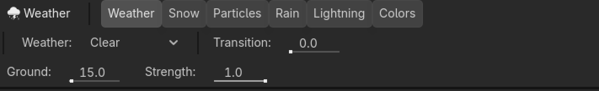
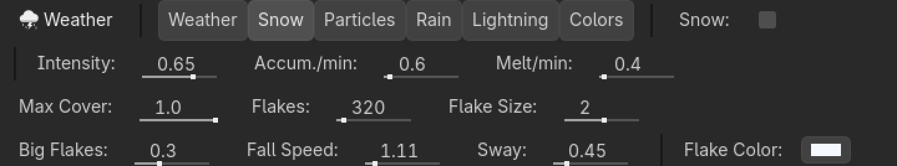
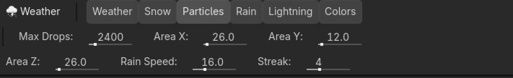
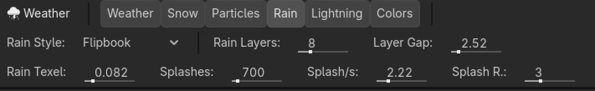
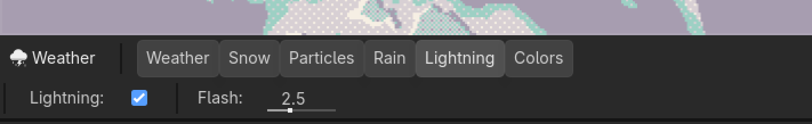
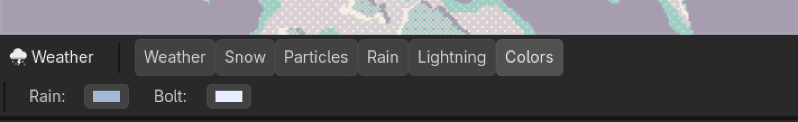
Weather
Which weather to show. The headline knob. Applies instantly even with Animate off.
- Range / default
- Clear · Cloudy · Foggy · Rain · Snow · Storm
- Property
weather
Transition
How long a weather change takes to blend while things are animating (Animate on, or in the game). 0 = instant switch. With Animate off the new weather always appears at once.
- Range / default
- 0 – 120
- Property
transition_seconds
Ground
How long wet or snowy ground takes to build up.
- Range / default
- 0 – 600
- Property
ground_seconds
Strength
Overall strength of the weather effect.
- Range / default
- 0 – 1 · default 1
- Property
strength
Snow
Adds extra falling snow on top of whatever weather is chosen.
- Range / default
- on / off
- Property
snow_enabled
Intensity
How heavy the extra snowfall is.
- Range / default
- 0 – 1
- Property
snow_intensity
Accum./min
How fast snow builds up on the ground.
- Range / default
- 0 – 10
- Property
snow_accumulation
Melt/min
How fast settled snow melts.
- Range / default
- 0 – 10
- Property
snow_melt
Max Cover
The most ground snow can cover.
- Range / default
- 0 – 1
- Property
snow_max_cover
Flakes
Number of falling flakes.
- Range / default
- 0 – 4000
- Property
snow_flakes
Flake Size
Flake size in art pixels.
- Range / default
- 1 – 3
- Property
flake_texels
Big Flakes
Share of larger flakes.
- Range / default
- 0 – 1
- Property
snow_big_flakes
Fall Speed
How fast flakes fall.
- Range / default
- 0.1 – 10
- Property
snow_speed
Sway
Side-to-side drift of the flakes.
- Range / default
- 0 – 3
- Property
snow_sway
Flake Color
Colour of the flakes.
- Range / default
- colour
- Property
snow_color
Max Drops
Most rain drops alive at once.
- Range / default
- 0 – 20000
- Property
max_drops
Area X / Y / Z
The box around the camera that rain fills.
- Range / default
- X and Z 1 – 500, Y 1 – 200
- Property
area
Rain Speed
How fast the rain falls.
- Range / default
- 1 – 60
- Property
rain_speed
Streak
Length of each rain streak in art pixels.
- Range / default
- 1 – 12
- Property
streak_texels
Rain Style
How rain is drawn: a prebaked flipbook or individual particles.
- Range / default
- Flipbook / Particles
- Property
rain_style
Rain Layers
Number of rain layers.
- Range / default
- 1 – 32
- Property
rain_layers
Layer Gap
Spacing between rain layers.
- Range / default
- 0.2 – 20
- Property
rain_layer_spacing
Rain Texel
Art-pixel size of the rain.
- Range / default
- 0.01 – 0.5
- Property
rain_texel
Splashes
Most splashes alive at once.
- Range / default
- 0 – 8000
- Property
max_splashes
Splash/s
Splashes spawned per second.
- Range / default
- 0.1 – 10
- Property
splash_rate
Splash R.
Splash size.
- Range / default
- 1 – 8
- Property
splash_radius
Lightning
Allows lightning bolts and flashes (Storm uses them).
- Range / default
- on / off
- Property
lightning_enabled
Flash
How bright a lightning flash lights the scene.
- Range / default
- 0 – 8
- Property
flash_energy
Rain
Rain colour.
- Range / default
- colour
- Property
rain_color
Bolt
Lightning bolt colour.
- Range / default
- colour
- Property
bolt_color
Water — PixelWater
A stylised pixel water surface: colour bands from shallow to deep, rolling swell and chop, a dancing caustic pattern on the floor, foam surging around the shore — and, on hex or triangle terrains, raised pools and waterfalls. Add it: Pixel World → Water.
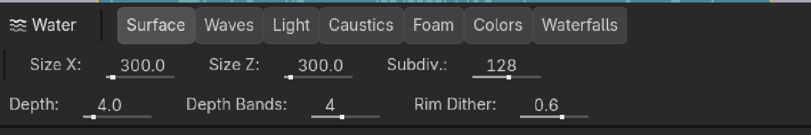
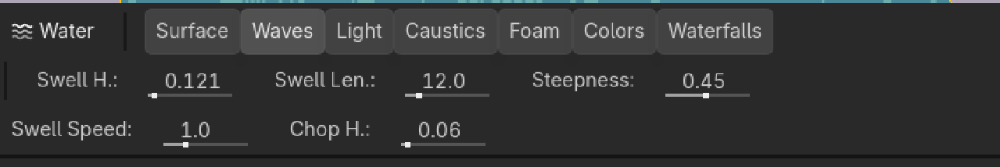
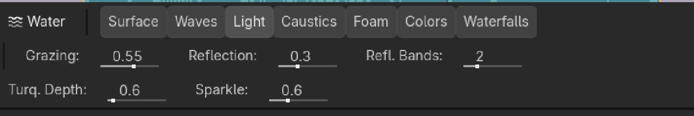
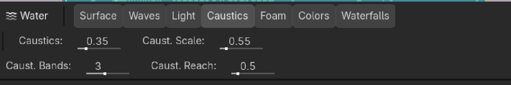
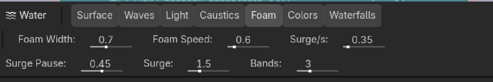
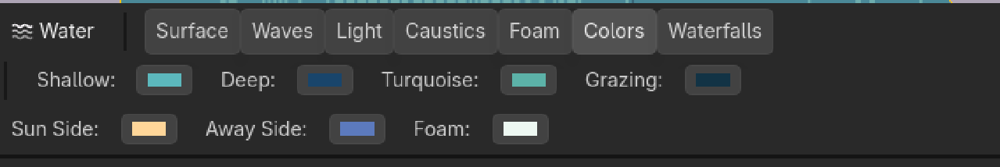
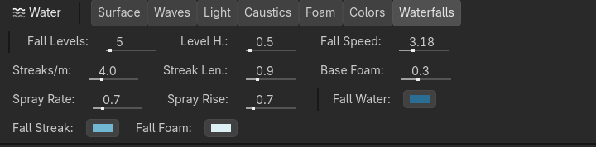
Size X / Z
How big the water plane is.
- Range / default
- 1 – 4000 · default 300
- Property
size
Subdiv.
How finely the surface is divided (needed for waves to bend it).
- Range / default
- 0 – 256 · default 128
- Property
subdivisions
Depth
Depth scale used to colour shallow vs deep water.
- Range / default
- 0.1 – 32 · default 4
- Property
depth_scale
Depth Bands
Number of flat colour bands from shallow to deep.
- Range / default
- 1 – 8 · default 4
- Property
depth_bands
Rim Dither
Dithered (checkerboard-pixel) blend at the band edges.
- Range / default
- 0 – 1
- Property
rim_dither
Swell H.
Height of the big rolling swell.
- Range / default
- 0 – 2
- Property
swell_height
Swell Len.
Distance between swell crests.
- Range / default
- 1 – 80
- Property
swell_length
Steepness
How sharp the swell crests are (Gerstner waves).
- Range / default
- 0 – 1
- Property
swell_steepness
Swell Speed
How fast the swell travels.
- Range / default
- 0 – 4
- Property
swell_speed
Chop H.
Height of the small surface chop.
- Range / default
- 0 – 1
- Property
wave_height
Grazing
Strength of the grazing-angle sheen.
- Range / default
- 0 – 1
- Property
grazing_strength
Reflection
Strength of the sky reflection.
- Range / default
- 0 – 1
- Property
reflection_strength
Refl. Bands
Posterises the reflection into bands.
- Range / default
- 1 – 6
- Property
reflection_bands
Turq. Depth
Depth at which the turquoise tint shows.
- Range / default
- 0 – 8
- Property
turquoise_depth
Sparkle
Sun sparkle glints on the surface.
- Range / default
- 0 – 2
- Property
sparkle
Caustics
Strength of the dancing light pattern on the lagoon floor.
- Range / default
- 0 – 2
- Property
caustics_strength
Caust. Scale
Size of the caustic pattern.
- Range / default
- 0.05 – 4
- Property
caustics_scale
Caust. Bands
Posterise bands for the caustics.
- Range / default
- 1 – 6
- Property
caustics_bands
Caust. Reach
How deep the caustics reach.
- Range / default
- 0 – 4
- Property
caustics_reach
Foam Width
Width of the foam ring along the shore.
- Range / default
- 0 – 2
- Property
foam_width
Foam Speed
How fast the foam moves.
- Range / default
- 0 – 4
- Property
foam_speed
Surge/s
How often the foam surges up the shore.
- Range / default
- 0 – 4
- Property
foam_pulse_speed
Surge Pause
Pause between surges.
- Range / default
- 0 – 0.95
- Property
foam_dead_time
Surge
How far a surge pushes.
- Range / default
- 0 – 6
- Property
foam_surge
Bands
Foam colour bands.
- Range / default
- 1 – 8
- Property
bands
Shallow
Shallow-water colour.
- Range / default
- colour
- Property
shallow_color
Deep
Deep-water colour.
- Range / default
- colour
- Property
deep_color
Turquoise
The turquoise tint colour.
- Range / default
- colour
- Property
turquoise_color
Grazing
Grazing-angle sheen colour.
- Range / default
- colour
- Property
grazing_color
Sun Side
Reflected sky colour looking toward the sun.
- Range / default
- colour
- Property
sky_toward_sun
Away Side
Reflected sky colour looking away from the sun.
- Range / default
- colour
- Property
sky_away_from_sun
Foam
Foam colour.
- Range / default
- colour
- Property
foam_color
Fall Levels
Height difference (in terrain levels) needed before a waterfall forms.
- Range / default
- 1 – 64
- Property
waterfall_min_levels
Level H.
Height of one terrain level for waterfalls.
- Range / default
- 0 – 10
- Property
waterfall_level_height
Fall Speed
How fast the falling water moves.
- Range / default
- 0 – 12
- Property
fall_speed
Streaks/m
Density of streaks in the fall.
- Range / default
- 0.1 – 16
- Property
streak_density
Streak Len.
Length of each streak.
- Range / default
- 0.05 – 4
- Property
streak_length
Base Foam
Foam at the bottom of the fall.
- Range / default
- 0 – 1
- Property
base_foam
Spray Rate
How much spray the fall throws.
- Range / default
- 0 – 4
- Property
spray_rate
Spray Rise
How high the spray rises.
- Range / default
- 0 – 6
- Property
spray_rise
Fall Water / Fall Streak / Fall Foam
Colours of the waterfall body, its streaks and its foam.
- Range / default
- colours
The Waterfalls tab shows on any water, but raised pools and spilling waterfalls only form on hex or triangle terrains. The tutorial island is a square-grid terrain, so nothing spills here. Open demo/triangle_island.tscn or demo/hex_island.tscn to see them.
Fireflies — PixelFireflies
A blinking, wandering swarm that fades in at night. Add it: Pixel World → Fireflies. To see it: set Day / Night Time to about 0.9. At noon they're invisible — that's Night Only doing its job.
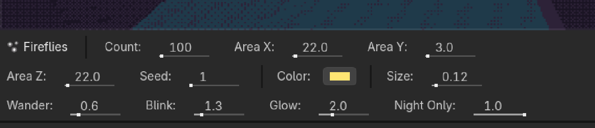
Count
How many fireflies.
- Range / default
- 0 – 4096 · default 100
- Property
count
Area X / Y / Z
The box the swarm wanders in.
- Range / default
- X and Z 0.1 – 500, Y 0.1 – 100
- Property
extents
Seed
Random seed — change it for a different arrangement.
- Range / default
- 0 – 99999
- Property
seed
Color
Glow colour.
- Range / default
- colour
- Property
tint
Size
Size of each firefly.
- Range / default
- 0.01 – 2
- Property
size
Wander
How much they wander about.
- Range / default
- 0 – 4
- Property
wander
Blink
Blink speed.
- Range / default
- 0 – 10
- Property
blink_speed
Glow
Glow brightness.
- Range / default
- 0 – 8 · default 2
- Property
energy
Night Only
Fades the swarm in as night falls. At 1 they are invisible at noon — that's expected.
- Range / default
- 0 – 1 · default 1
- Property
night_only
Particle Field — PixelParticleField
A pre-rendered, looping flipbook of pixel particles on layers anchored to the world: dust motes in sunbeams, rain, snow, embers or leaves. Because the layers are anchored, the field stays put when the camera moves. Add it: Pixel World → Particle Field. Headline knob: Preset.
The default field is deliberately faint: it draws one-pixel motes at Density 0.2, and Look ▸ Beam 1 shows them only inside the god-ray shafts. To see motes everywhere, set Look ▸ Beam to 0 and Field ▸ Density to 1.0, then get close to the ground — at island distance the motes are a pixel each.
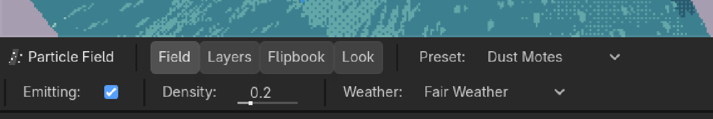
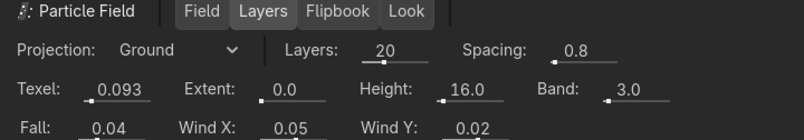
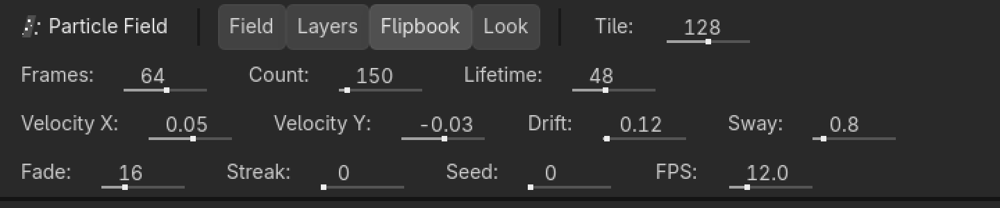
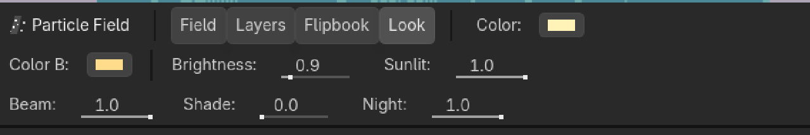
Preset
What kind of particles the field shows.
- Range / default
- Dust Motes · Rain · Snow · Embers · Leaves
- Property
preset
Emitting
Turns the field on or off.
- Range / default
- on / off
- Property
emitting
Density
How many particles.
- Range / default
- 0 – 1
- Property
density
Weather
Ties the field to the weather — e.g. only show in fair weather.
- Range / default
- Always · Fair Weather · Rain · Snow
- Property
weather_response
Projection
Whether the sheets lie flat or stand up.
- Range / default
- Ground / Upright
- Property
projection
Layers
Number of world-anchored sheets in the stack.
- Range / default
- 1 – 64
- Property
layers
Spacing
Gap between layers.
- Range / default
- 0.05 – 20
- Property
spacing
Texel
Art-pixel size.
- Range / default
- 0.01 – 1
- Property
texel_size
Extent
How far the field reaches.
- Range / default
- 0 – 500
- Property
extent
Height
Height of the field.
- Range / default
- 0.5 – 200
- Property
stature
Band
Band setting for the layer stack.
- Range / default
- 0 – 50
- Property
band
Fall
Fall speed.
- Range / default
- −10 – 30
- Property
fall_speed
Wind X / Y
Wind drift.
- Range / default
- −20 – 20
- Property
wind
Tile
Flipbook tile size.
- Range / default
- 16 – 256
- Property
tile_size
Frames
Number of frames in the baked loop.
- Range / default
- 4 – 128
- Property
frame_count
Count
Particles per tile.
- Range / default
- 1 – 2000
- Property
particle_count
Lifetime
How long each particle lives.
- Range / default
- 1 – 128
- Property
lifetime
Velocity X / Y
Particle velocity.
- Range / default
- −16 – 16
- Property
velocity
Drift
Random drift.
- Range / default
- 0 – 4
- Property
drift
Sway
Side-to-side sway.
- Range / default
- 0 – 8
- Property
sway
Fade
Fade in/out.
- Range / default
- 0 – 64
- Property
fade_frames
Streak
Streak length (for rain-like presets).
- Range / default
- 0 – 12
- Property
streak_length
Seed
Random seed.
- Range / default
- 0 – 99999
- Property
seed
FPS
Flipbook playback speed.
- Range / default
- 0 – 60
- Property
fps
Color
Main particle colour.
- Range / default
- colour
- Property
tint
Color B
Second particle colour.
- Range / default
- colour
- Property
color_b
Brightness
Overall brightness.
- Range / default
- 0 – 8
- Property
brightness
Sunlit
Extra brightness where the sun hits.
- Range / default
- 0 – 1
- Property
sunlit
Beam
Brightness inside light beams (motes in sunbeams).
- Range / default
- 0 – 1
- Property
beam
Shade
Brightness in shade.
- Range / default
- 0 – 1
- Property
shade
Night
Brightness at night.
- Range / default
- −1 – 1
- Property
night
Birds — PixelBirds
A flock of two-frame flapping pixel birds that circle, land on high ground, and scatter when the camera comes near (a "boids" flock — each bird follows simple rules about its neighbours). Add it: Pixel World → Birds.
Keep In Editor ticked (Look tab). In the editor the birds draw as small white birds at minimum size — there's no game camera to scale them up — and they fly only with Animate on (frozen otherwise). Press Play to see them full-size.
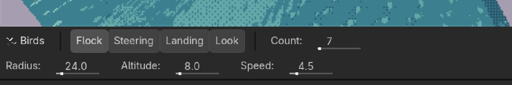
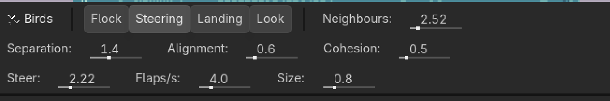
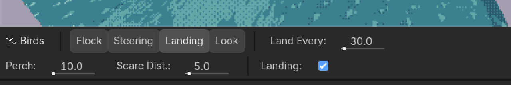
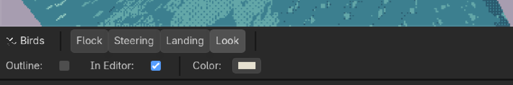
Count
How many birds.
- Range / default
- 1 – 256 · default 7
- Property
count
Radius
How wide the flock circles.
- Range / default
- 1 – 200
- Property
radius
Altitude
How high they fly.
- Range / default
- 0 – 100
- Property
altitude
Speed
Flying speed.
- Range / default
- 0.1 – 30
- Property
speed
Neighbours
How many neighbours each bird pays attention to (boids).
- Range / default
- 0.1 – 20
- Property
neighbor_distance
Separation
Urge to keep apart.
- Range / default
- 0 – 4
- Property
separation
Alignment
Urge to fly the same direction as neighbours.
- Range / default
- 0 – 4
- Property
alignment
Cohesion
Urge to stay together.
- Range / default
- 0 – 4
- Property
cohesion
Steer
How sharply birds can turn.
- Range / default
- 0.1 – 10
- Property
steer_rate
Flaps/s
Wing flaps per second (2-frame flap).
- Range / default
- 0 – 20
- Property
flap_speed
Size
Bird size.
- Range / default
- 0.05 – 4
- Property
size
Land Every
How often the flock lands on high ground.
- Range / default
- 1 – 600
- Property
land_interval
Perch
How long they stay perched.
- Range / default
- 0.5 – 600
- Property
perch_seconds
Scare Dist.
Birds scatter when the camera comes within this distance.
- Range / default
- 0 – 100
- Property
scare_distance
Landing
Whether birds land at all.
- Range / default
- on / off
- Property
landing
Outline
Draws a pixel outline around each bird.
- Range / default
- on / off
- Property
outline
In Editor
Must be on for birds to draw in the editor (they draw small and white; they fly with Animate on).
- Range / default
- on / off
- Property
preview_in_editor
Color
Bird colour.
- Range / default
- colour
- Property
tint
Smoke & Fire — PixelSmoke
Tumbling outlined puffs that drift with the sky wind, with optional flames and a flickering light at the base. Great for chimneys, campfires and burning wrecks. Add it: Pixel World → Smoke & Fire → + Add; a Smoke node appears. Move it onto your object (Inspector → Position), then tick Fire on the Colors tab if you want flames. (In code, burst(position, count) makes a one-off puff for builds and explosions.)
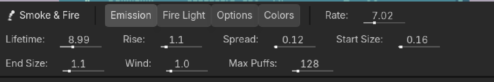
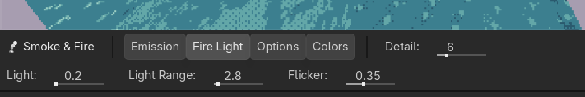
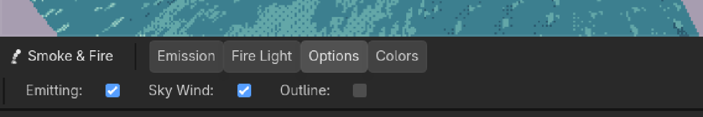
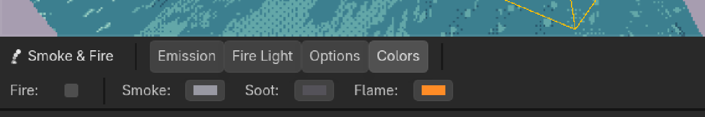
Rate
Puffs spawned per second.
- Range / default
- 0 – 30
- Property
rate
Lifetime
How long each puff lives.
- Range / default
- 0.2 – 30
- Property
lifetime
Rise
How fast puffs rise.
- Range / default
- 0 – 10
- Property
rise_speed
Spread
How widely puffs spread.
- Range / default
- 0 – 4
- Property
spread
Start Size
Puff size when born.
- Range / default
- 0.02 – 4
- Property
start_size
End Size
Puff size when it fades.
- Range / default
- 0.02 – 8
- Property
end_size
Wind
How strongly wind pushes the plume.
- Range / default
- 0 – 10
- Property
wind_strength
Max Puffs
Most puffs alive at once.
- Range / default
- 1 – 1024
- Property
max_puffs
Detail
Flame detail.
- Range / default
- 4 – 16
- Property
detail
Light
Brightness of the fire's flickering light.
- Range / default
- 0 – 16
- Property
light_energy
Light Range
How far the fire light reaches.
- Range / default
- 0.1 – 50
- Property
light_range
Flicker
How much the light flickers.
- Range / default
- 0 – 1
- Property
flicker
Emitting
Turns smoke on or off.
- Range / default
- on / off
- Property
emitting
Sky Wind
Drift with the PixelSky wind.
- Range / default
- on / off
- Property
use_sky_wind
Outline
Outlined, tumbling puffs.
- Range / default
- on / off
- Property
outline
Fire
Adds flames at the base and a flickering light.
- Range / default
- on / off
- Property
fire
Smoke
Smoke colour.
- Range / default
- colour
- Property
fumes_tint
Soot
Soot (dark smoke) colour.
- Range / default
- colour
- Property
ash_tint
Flame
Flame colour.
- Range / default
- colour
- Property
fire_tint
Light Volumes — PixelLightVolume
A stepped point light with a dithered pool of light on the ground and a small glowing orb — a lantern, torch or window glow. Add it: Pixel World → Light Volume → + Add, then move it onto your lamp post. With several, select the one to edit; otherwise the first in the scene is used.
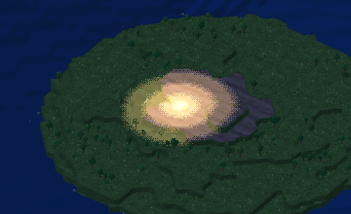
Two settings keep it quiet at defaults: Energy starts low (≈ 0.15), and Night Boost dims the pool to about 35 % in daylight. To see a clear lantern, set Day / Night Time to ≈ 0.9–0.95 and raise Energy / Pool Energy. The shots above used Energy ≈ 20, Pool Energy ≈ 2.5, Radius ≈ 14. It's brighter still at runtime.
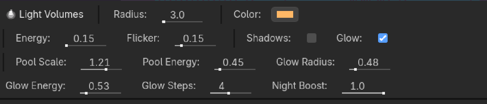
Radius
How far the light reaches.
- Range / default
- 0.1 – 100 · default 3
- Property
radius
Color
Lamp colour.
- Range / default
- colour · warm (≈ 1.0, 0.72, 0.40)
- Property
lamp_tint
Energy
Light brightness. Low by default, so the pool is subtle — raise it.
- Range / default
- 0 – 16 · default ≈ 0.15 (low)
- Property
energy
Flicker
Candle-like flicker (visible with Animate on).
- Range / default
- 0 – 1
- Property
flicker
Shadows
Whether the light casts shadows.
- Range / default
- on / off
- Property
shadows
Glow
Draws the small source orb glow.
- Range / default
- on / off
- Property
glow_enabled
Pool Scale
Size of the dithered light pool on the ground.
- Range / default
- 0.05 – 2 · default 1.2
- Property
pool_scale
Pool Energy
Brightness of the light pool.
- Range / default
- 0 – 4 · default 0.45
- Property
pool_energy
Glow Radius
Size of the orb glow.
- Range / default
- 0 – 4 · default 0.48
- Property
glow_radius
Glow Energy
Brightness of the orb glow.
- Range / default
- 0 – 4 · default 0.52
- Property
glow_energy
Glow Steps
Number of stepped rings in the glow.
- Range / default
- 1 – 8 · default 4
- Property
glow_steps
Night Boost
Scales the pool down in daylight (≈35 % strength) and up to full at night.
- Range / default
- 0 – 1 · default 1
- Property
night_boost
Sun Shafts — PixelSunShafts
A stack of light sheets lit along the sun, for visible shafts of light through gaps in the scene. It's a separate node from the renderer's God Rays (page 7) — you can use either or both. Add it: Pixel World → Sun Shafts → + Add.
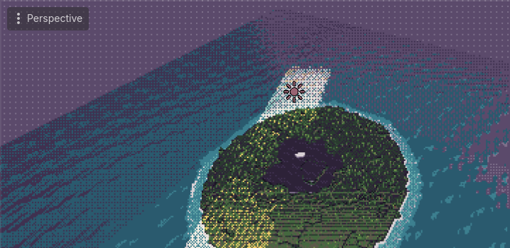
The default Alpha is only 0.0105 — barely visible. Raise it (0.2–0.3 already reads; 1.0 is bold) and use a low sun: Time ≈ 0.25 (dawn) or ≈ 0.75 (dusk), with the sun roughly toward the camera.
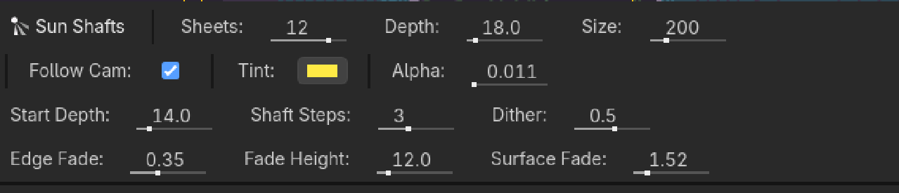
Sheets
Number of light sheets in the stack.
- Range / default
- 1 – 16 · default 12
- Property
count
Depth
How deep the sheet stack goes.
- Range / default
- 0 – 200 · default 18
- Property
depth
Size
Size of each sheet.
- Range / default
- 1 – 1000 · default 200
- Property
size
Follow Cam
Keeps the stack around the camera.
- Range / default
- on / off · default on
- Property
follow_camera
Tint
Beam colour.
- Range / default
- colour · yellow
- Property
beam_tint
Alpha
Beam strength. Default is barely visible — 0.2–0.3 already reads, 1.0 is a bold beam.
- Range / default
- 0 – 1 · default 0.0105 (the strip rounds it to 0.011)
- Property
alpha
Start Depth
How far from the camera the sheets start.
- Range / default
- 0 – 100 · default 14
- Property
start_depth
Shaft Steps
Number of stepped brightness levels in a shaft.
- Range / default
- 0 – 8 · default 3
- Property
shaft_steps
Dither
Dithered edge width.
- Range / default
- 0 – 1
- Property
dither_width
Edge Fade
Fade at the sheet edges.
- Range / default
- 0 – 1
- Property
edge_fade
Fade Height
Height over which shafts fade.
- Range / default
- 0 – 100
- Property
fade_height
Surface Fade
Fade where shafts meet surfaces.
- Range / default
- 0 – 10
- Property
surface_fade
Grass Fire — PixelFireSystem
Fire that spreads through the terrain's grass with the wind, chars the ground and shrinks the blades. Rain puts it out with steam, and burnt grass grows back. Add it: scroll the Pixel World panel to Grass Fire → + Add. A FireSystem node is added under the terrain.
- Select FireSystem → Fire tab → tick Ignite Tool.
- Click the island grass in the 3D view to start a fire. Shift+click puts it out. (While the tool is on, the coloured move arrows — the "gizmo" — stay out of the way so your clicks land on the grass.) Or just press Ignite Here.
- Turn Animate on and watch it spread and char the grass.
- Press Put Out to stop it, or Reset to clear the burn.
Ignite Tool
Turn on, then click the terrain grass in the 3D view to start a fire. Shift+click puts it out. While it's on, the move arrows (gizmo) stay out of the way of your clicks.
- Range / default
- on / off
- Property
ignite_tool
Ignite Radius
Size of the fire each click starts.
- Range / default
- 0.1 – 20 · default 0.8
- Property
ignite_radius
Ignite Here
Starts a fire at a default spot — no clicking in the viewport.
- Range / default
- button
- Property
ignite_here
Put Out
Puts out every fire.
- Range / default
- button
- Property
extinguish_all
Reset
Resets the fire simulation (burnt state).
- Range / default
- button
- Property
reset_fire
Simulate
Runs the spread simulation.
- Range / default
- on / off · default on
- Property
simulate
In Editor
Shows the fire in the editor.
- Range / default
- on / off · default on
- Property
preview_in_editor
Cell Size
Size of each fire cell.
- Range / default
- 0.1 – 4
- Property
texel_size
Seed
Random seed.
- Range / default
- any whole number
- Property
seed
Spread
How fast fire spreads through grass.
- Range / default
- 0 – 10
- Property
spread_rate
Burn Time
How long a cell burns.
- Range / default
- 0.1 – 60
- Property
burn_time
Embers
How often embers jump.
- Range / default
- 0 – 1
- Property
ember_rate
Ember Dist.
How far embers jump.
- Range / default
- 0 – 10
- Property
ember_distance
Max Step
Cap on spread per step.
- Range / default
- 0 – 20
- Property
max_step
Sky Wind
Use the PixelSky wind to push the fire.
- Range / default
- on / off
- Property
use_sky_wind
Wind Str.
Wind strength on the fire.
- Range / default
- 0 – 10
- Property
wind_strength
Wind Skew
How much the wind skews the spread direction.
- Range / default
- 0 – 4
- Property
wind_influence
Rain
Forces a rain amount for dousing (−1 = follow the weather).
- Range / default
- −1 – 1
- Property
rain_override
Douse
How fast rain puts fire out (with steam).
- Range / default
- 0 – 10
- Property
douse_rate
Wet Rate
How fast grass gets wet.
- Range / default
- 0 – 4
- Property
wet_rate
Wet Block
How much wetness blocks fire.
- Range / default
- 0.01 – 1
- Property
wet_block
Regrow After
Delay before burnt grass starts to regrow.
- Range / default
- 0 – 600
- Property
regrow_delay
Regrow Time
How long regrowth takes.
- Range / default
- 0.1 – 600
- Property
regrow_time
Wet Boost
Faster regrowth when wet.
- Range / default
- 0 – 10
- Property
wet_regrow_boost
Flames
Flame particles per second.
- Range / default
- 0 – 40
- Property
flame_rate
Flame Size
Flame size.
- Range / default
- 0.02 – 4
- Property
flame_size
Smoke
Smoke amount.
- Range / default
- 0 – 10
- Property
smoke_rate
Steam
Steam amount (when doused).
- Range / default
- 0 – 4
- Property
steam_amount
Lights
Number of flickering fire lights.
- Range / default
- 0 – 8
- Property
max_lights
Light
Fire light brightness.
- Range / default
- 0 – 16
- Property
light_energy
Glow
Glow intensity.
- Range / default
- 0 – 4
- Property
glow_intensity
Core
Flame core colour.
- Range / default
- colour
- Property
inner_tint
Flame
Flame colour.
- Range / default
- colour
- Property
fire_tint
Rim
Flame rim colour.
- Range / default
- colour
- Property
brim_tint
Smoke Col.
Smoke colour.
- Range / default
- colour
- Property
fumes_tint
Steam Col.
Steam colour.
- Range / default
- colour
- Property
vapor_tint
Recipes
Each recipe starts from a Lighting Preset and then tunes individual nodes. Tick steps off as you go — your progress is remembered.
- Pixel World → Lighting Preset → Storm (Storm weather, 0.85 coverage, grey deck, fog).
- Select PixelDayNight → Time tab → Time
0.95(night). - Sun & Fog tab → make sure Fog is on; raise Fog Night above the preset's
0.0165(try0.025) for a heavier murk. - Select PixelWeather → Lightning tab → Lightning on; raise Flash for brighter strikes. Colors tab → pick a cold Bolt colour.
- Pixel World → Light Volume → + Add. Move it onto the hut, set Energy ≈ 20, Pool Energy ≈ 2.5, Radius ≈ 14, Flicker ≈ 0.6.
- Turn Animate on: rain falls, lightning flashes, the lantern flickers.
- Pixel World → Lighting Preset → Dawn (time 0.27, light fog, peach deck, warm god rays).
- Select PixelWeather → Weather → Foggy. If it's too thick, lower Strength to about
0.5. - Pixel World → Sun Shafts → + Add. Raise Alpha to
0.25; orbit the view so the low sun is roughly toward the camera. - Select Dust (Particle Field) → Field tab → Preset Dust Motes, Emitting on, Density 1.0; Look tab → Beam 0 for motes everywhere (Beam 1 keeps them only in the shafts).
- Select Birds → Flock tab → Count ≈ 12, a low Altitude for birds skimming the mist.
- Animate on to watch motes drift and birds circle.
- Pixel World → Lighting Preset → Noon (time 0.5, Clear, bright god rays).
- Select PixelSky → lower Coverage to about
0.25for just a few cloud shadows; keep Shadow around0.45. - Select PixelWater → Light tab → raise Sparkle (up to 2); Caustics tab → raise Caustics so the shallow floor dances.
- Foam tab → widen Foam Width a touch for a brighter surf ring; Colors tab → nudge Turquoise and Shallow to taste.
- Select Dust → Field tab → Weather Fair Weather, so motes only show in good weather.
- Select Birds → keep In Editor on; Animate on to watch them circle.
Coming from Roblox: bridges
In Studio you set Lighting.ClockTime (0–24) and tweak Brightness, Ambient and OutdoorAmbient. Here Day / Night → Time does the same job on a 0–1 scale (multiply by 24: 0.5 = ClockTime 12, 0.75 = 18). Sun Energy and Ambient are your Brightness and Ambient. The Lighting Presets are like Studio's lighting presets, but one click sets time, sun, clouds, fog and god rays together — and it's undoable with Ctrl+Z.
Roblox's Atmosphere object adds Density and Haze. Here, haze comes from Day / Night's Fog, Fog Day and Fog Night, and the Foggy, Storm and Snow weathers add their own. For god rays (Roblox's SunRaysEffect) see the renderer's God Rays on page 7, or add a Sun Shafts node.
Roblox's Clouds object (inside Terrain) has Cover, Density and Color. Sky & Clouds maps neatly: Coverage ≈ Cover, Opacity ≈ Density, Color / Shade ≈ Color. Unlike Roblox, the clouds also cast moving shadows on the ground and you control the wind direction (Wind X / Y).
Studio's Terrain water is painted voxels with WaterColor, WaterTransparency, WaterWaveSize and WaterWaveSpeed on the Terrain object. PixelWater is a separate node — a stylised surface plane — so you don't paint it; you size it. Shallow/Deep colours ≈ WaterColor, Swell H./Swell Speed ≈ WaveSize/WaveSpeed, plus extras Roblox doesn't have: depth bands, foam surges and caustics.
In Roblox you'd build fireflies or smoke from a ParticleEmitter, picking Texture, Rate, Lifetime and Speed. Here each effect is a ready-made, pixel-art styled node — you tune counts, colours and behaviour (Wander, Blink, Night Only) rather than emitter textures. Particle Field is closest to a world-anchored emitter with presets (dust, rain, snow, embers, leaves).
Weather has no Studio built-in — it's one dial for rain, snow, fog, wet ground and lightning, instead of hand-building a ParticleEmitter + Atmosphere combo. + Add is like Insert Object, but each entry is a whole effect and it auto-wires the sun and camera. The Grass Fire ignite tool has no Studio equivalent — click the viewport to start a spreading simulation. And Undo is the same Ctrl+Z: every strip, panel or preset change is one history step.
Tips & gotchas
- Nothing moving? Turn Animate on. Edits show without it; motion doesn't.
- Can't see birds, a lantern or sun shafts? They're subtle by design in the editor: birds are small and white, Light Volumes need night and more Energy, Sun Shafts need a higher Alpha and a low sun. All three look stronger when you press Play.
- Fireflies missing at noon? That's Night Only = 1. Set Time to night, or lower Night Only.
- No waterfall? Waterfalls only form on hex or triangle terrains.
- Can't click a + Add or preset button? Scroll the Pixel World panel so it's actually in view.
- New effect floating in mid-air? Set its Position in the Inspector.
- Slider jumped to a crazy value? Drag slowly, or click the number and type it.
- A small node icon (and a magenta box) at the scene origin shows whenever a point-like effect is selected. It's harmless — it won't appear in the game.
Check yourself
You change Day / Night → Time with Animate off. Does the viewport update?
Yes — any field edit refreshes the picture immediately. Animate only controls whether things move on their own (the clock running, clouds drifting, rain falling).
What Time value gives you noon? And dusk?
0.5 is noon; about 0.75 is dusk (0 is midnight, 0.25 dawn).
You applied the Storm preset and hate it. How do you get back?
Press Ctrl+Z once — a preset is a single undo step, even though it changes many fields.
Your Sun Shafts node is invisible. What two things do you change?
Raise Alpha (default 0.0105 is barely visible — try 0.25) and set Time to a low sun, around 0.25 or 0.75.
Related pages
- 7 · The pixelizer — pixel size, outlines, palette, God Rays, Animate, the Pixel World panel and Wire Sun / Env Refs.
- 5 · Foliage, grass & flowers — the grass that Grass Fire burns.
- 3 · Sculpting terrain — shape the island and lagoon floor the water sits on.
- 13 · Playtesting & exporting — press Play to see every effect at full strength.